Pilot overnight stack
All eight reviewed Pilot changes are merged into develop. The pull request links and review evidence are below. Vector is out of scope. The separate Update code & retry action was removed after review.
Progress: 8 of 8 done. Updated 2026-11-04 17:55 IST.
#591 Configurable Nginx ports
Merged- Root cause
- NginxConfig had http_port and https_port, but no config file fed them. A [nginx] table in bench.toml was ignored without a warning, so nginx always listened on 80 and 443.
- Change
- One nginx serves every bench on a host, so the ports are a host setting: [nginx] http_port and https_port in common_config.toml (defaults 80 and 443). Pilot checks the values and stops with a clear error when a value is bad. A [nginx] table in bench.toml is now an error that names common_config.toml. The admin readiness check reads the port from the same file. Two copies of the port-suffix code now use one helper, login.origin().
- Tests
- New tests: ports round trip, defaults are not written, bad ports fail, [nginx] in bench.toml fails. The admin readiness tests now set the port in common_config.toml. Earlier full suite: 4059 passed. Final checks are below.
- Branch
- feat/nginx-ports, based on develop
- Pull request
- https://github.com/frappe/pilot/pull/775
#584 Common site config editor
Merged- Change
- Settings > Bench has a common site config editor. The site editor uses the same component. Pick a known key or add a custom key with a type. The dialog uses 60% of the row for the key and 40% for the value. Long values are cut with an ellipsis.
- Secrets
- Password fields are write-only. The API returns a mask, never the stored value. Users can set or remove encryption_key. Only keys that Pilot writes are blocked.
- Checks
- Core, API and frontend tests cover config updates, types, managed keys and secret masking. The earlier test server run checked saves and rejected managed keys. The screenshots below show the final local review changes.
- Branch
- feat/common-site-config-editor, based on feat/nginx-ports
- Screens
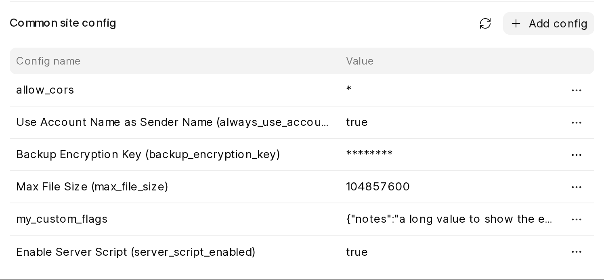
Reviewed config table: known key labels, masked secrets and long values. 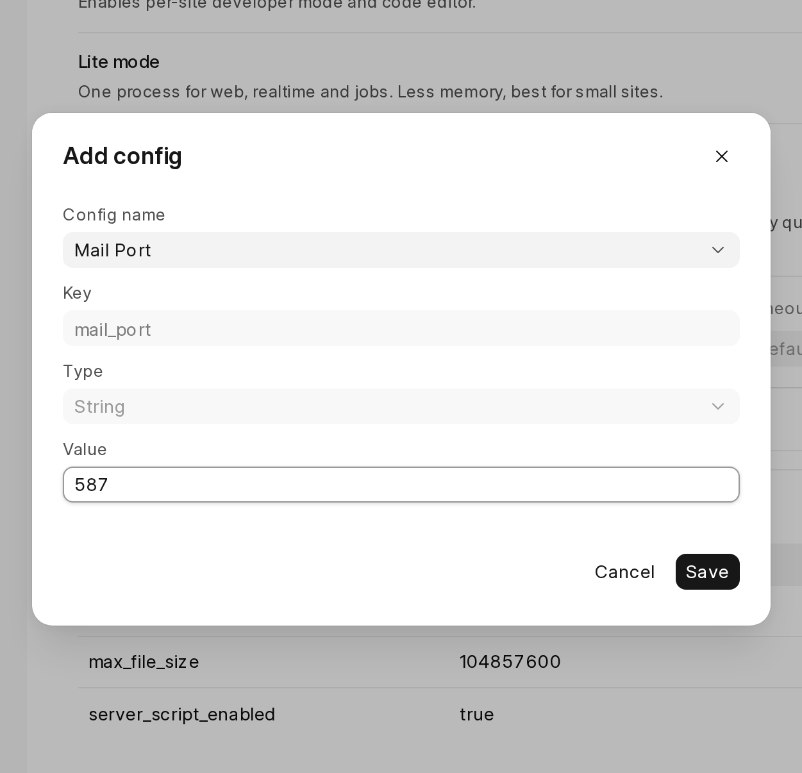
Reviewed add dialog: choose a known key and enter its typed value. - Pull request
- https://github.com/frappe/pilot/pull/776
Settings > Database fixes found during the check
Merged- Why
- The Settings > Database review found three display problems. The data and actions were correct.
- Change
- 1. The Buffer pool inline editor put 'of 2128 MB' inside the narrow input, so a typed 1800 showed as '300'. The input now shows only the unit. 2. In edit mode the card header cut '50 advised' to '50 adv…'. The note now leaves out the label (the icon stays): '1535 advised · up to 2128', or 'Use 10 to 87' in red for a bad value. 3. MariaDB shows 'no limit' as 2^64-1 bytes, and the list showed tmp_disk_table_size as '16777216 TB'. It now shows 'No limit'.
- Branch
- fix/database-settings-ui, based on feat/common-site-config-editor
- Screens
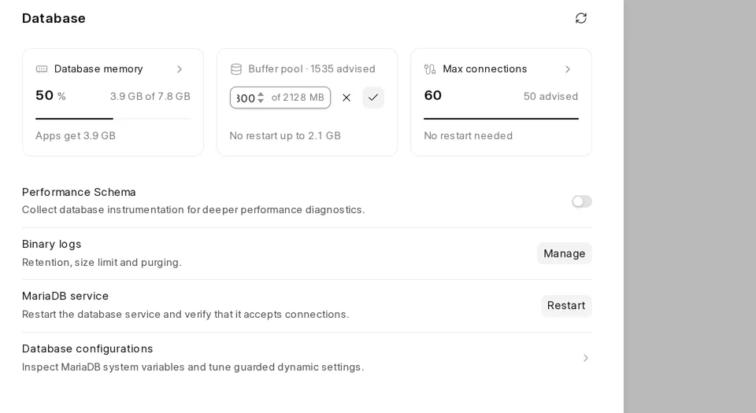
Before: 1800 typed, '300' visible; the suffix covers the number. 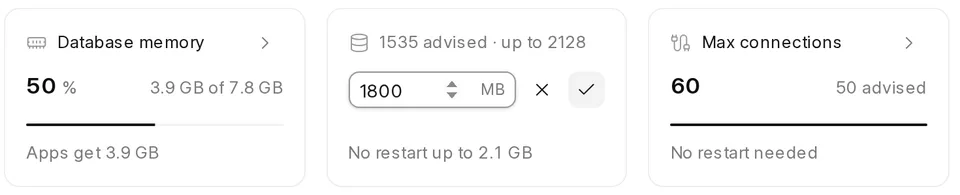
After: the full value shows, with the advised value and the maximum in the header. 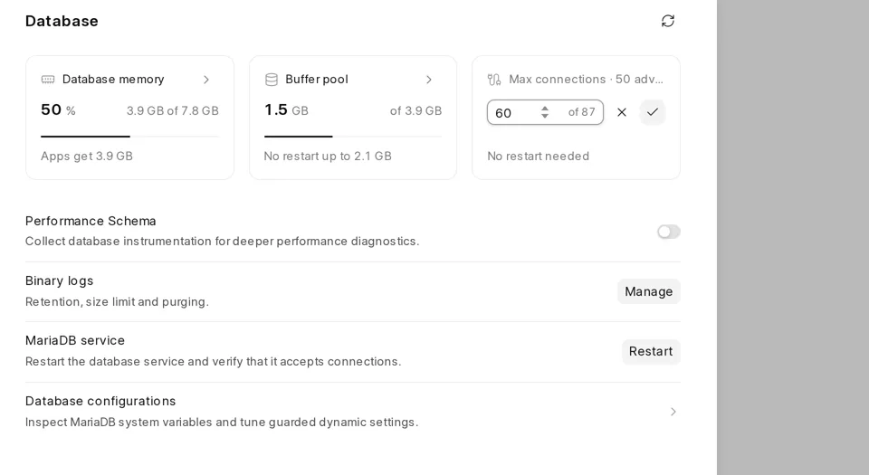
Before: 'Max connections · 50 adv…' is cut off. 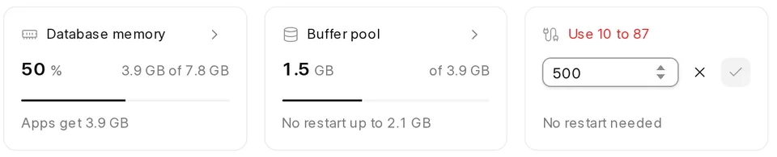
After: a value out of range shows 'Use 10 to 87', and Save is off. 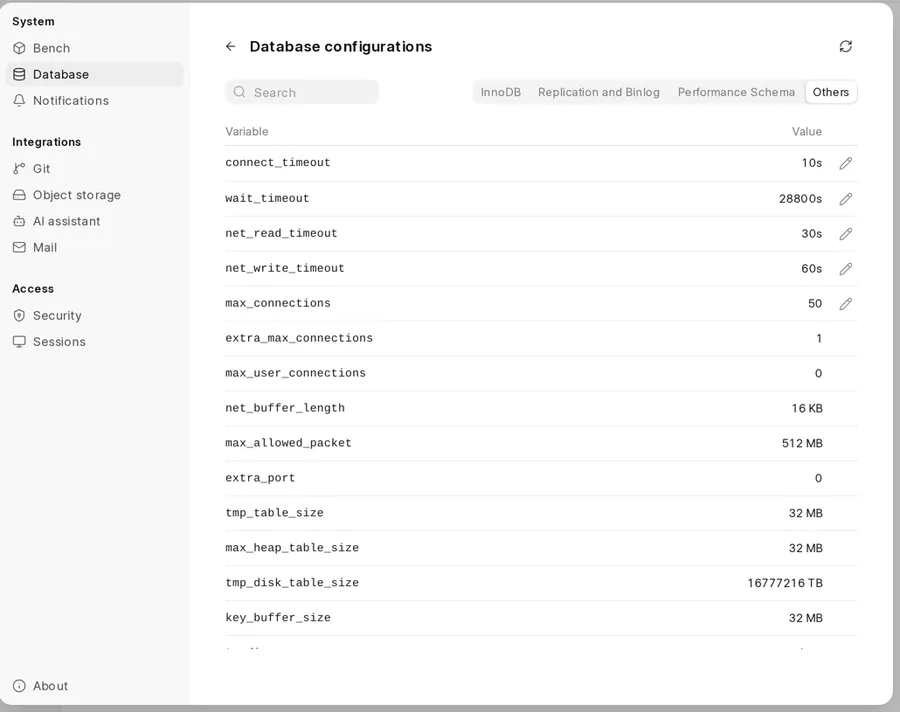
Before: tmp_disk_table_size reads '16777216 TB'. 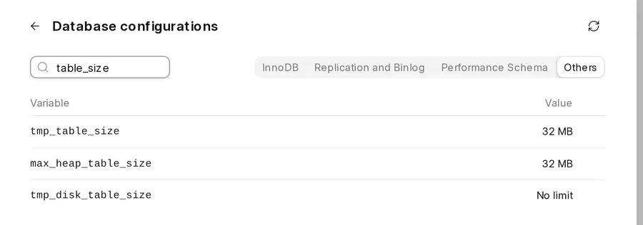
After: it reads 'No limit'. - Pull request
- https://github.com/frappe/pilot/pull/777
#670 Update failed button blocks access to updates
Merged- Change
- Dismiss closes a failed update, restarts services on the current code, restores the saved maintenance and scheduler settings, and deletes its backup. The Closed tab keeps the record. Restore skips apps and sites that were removed after the failure.
- UI
- The attention card has Retry, Skip patch, Restore backup and Dismiss. Each action has a short confirmation. Successful actions refresh the state.
- Interruption checks
- Two real migrates were force-stopped on the test server. Both paused safely in Needs attention. Dismiss restored maintenance_mode and pause_scheduler. A task stopped after its migrate step paused without a failed site, so Retry could finish the operation.
- Issue #600
- The separate Update code & retry action was removed at review. The chosen path is Dismiss, then start a new update. Dismiss deletes the original backup and lets sites run again. A later backup can therefore contain a partly migrated database.
- Branch
- feat/migration-dismiss, based on fix/database-settings-ui
- Screens
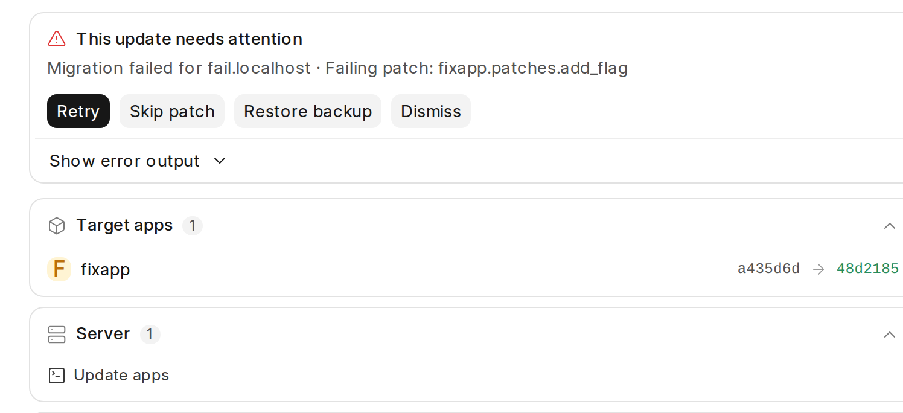
Reviewed attention card after a simulated failed local update. - Pull request
- https://github.com/frappe/pilot/pull/778
#753 Keep the pre-update backup in the S3 bucket
Merged- Change
- With a bench bucket and [s3] upload_migration_backups enabled, each MariaDB table dump streams through gzip into S3. Restore streams each object through gunzip into MariaDB. No database dump is written to local disk. The table list, config copy and S3 location stay local.
- Settings
- The switch is in Settings > Bench. It is on by default and ignored without a bucket. SQLite and PostgreSQL backups stay local. The disk check counts only sites that back up locally.
- Safety
- A failed dump deletes its object. Restore checks that all objects exist before it starts imports. Dismiss and discard delete this backup's objects.
- S3 fixes
- Custom endpoints use path-style requests to avoid bucket hostname TLS errors. Settings reports TLS errors and keeps a custom region.
- Checks
- The test server backed up 30 tables to the test bucket. Restore recovered the site and its old app commit, then removed the backup. After review, focused tests checked streamed restore with no local dump file. The final switch location is in the reviewed source; the earlier storage screenshot was removed.
- Branch
- feat/migration-backups-s3, based on feat/migration-dismiss
- Pull request
- https://github.com/frappe/pilot/pull/779
#726 Send all notifications to webhooks, with an event filter per endpoint
Merged- Configuration
- Endpoints use the top-level [[webhook_endpoints]] array in common_config.toml. Each has a URL, an optional token and events. An empty event list receives every event. Old entries under resource_limits still load and move on the next save.
- Delivery
- Each endpoint receives a fixed JSON body. A token adds Bearer authorization and an HMAC-SHA256 signature in X-Pilot-Signature-256. Safe task context is included. Passwords, tokens and repository URLs are excluded.
- Events
- Webhooks receive site, backup, app, update, Pilot and certificate events. They also receive site recovery and resource recovery events. Mail and Central receive alerts only.
- UI
- Settings > Notifications has an event picker, an optional token and a Test button. Save changes is at the right of the card.
- Checks
- Earlier live tests checked signed delivery, filters, test requests and delivery errors. Unit and frontend checks cover the expanded event set and the new top-level config. The earlier screenshots show the picker and Test button before the last layout review.
- Branch
- feat/webhook-events, based on feat/migration-backups-s3
- Screens
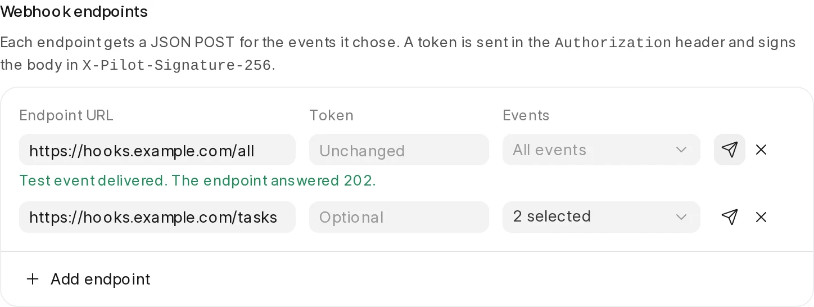
Settings > Notifications: optional token, events per endpoint, and the Test button result. 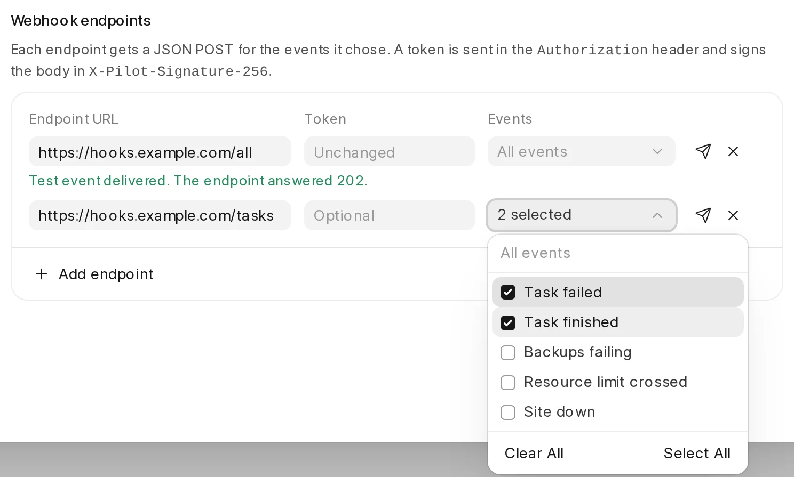
The event picker. No choice means all events. - Pull request
- https://github.com/frappe/pilot/pull/780
#748 Validate alerting: alerts on by default, and each alert checked end to end
Merged- Default alerts
- CPU, memory and disk alerts were off on every host. They now start at 90%, and site uptime stays on. The enable_default_alerts patch turns them on once on an older host that had all three off. On the test server the patch changed 0/0/0 to 90/90/90. A host that set any limit keeps its values.
- Central bug
- Central's report_pilot_event refuses an event type that is not one of its Server types. Pilot sent site_down, but Central calls it site_unavailable, so a managed host's team never got site-down alerts. Pilot now sends Central's names: site_down → site_unavailable, backups_failing → backup_failure, a failed update → migration_failure, and resource_limit_breached as it is. Central has no certificate type, so certificate_expiry goes to mail and webhooks only. Checked against Central's develop fixtures; not sent to a real Central.
- Less noise
- Mail and Central get only alerts. Each failed backup attempt was going to be a task mail (6 a day). Now an inbox gets one 'Backups of <site> are failing' mail, and every task event still goes to webhooks and the feed.
- Better bodies
- Resource, site-down and certificate alerts now carry a title, category, severity, site and dashboard link. The mail subject uses the title, so it names the site.
- Live test
- On the test server: an SMTP sink with a real TLS certificate (STARTTLS checked) and a webhook receiver that checks the signature. Limits set to 1-5%, web workers stopped, and a site's DB password broken. Mail and webhook both got: Resource limit breached (after 5 minutes), '2 sites are unreachable', and 'Backups of <site> are failing' (once, at the 6th failure). The feed got each one. Then the server was restored.
- Found, not changed
- The uptime ping (/api/method/ping) does not use the database, so a site with a broken DB still counts as up.
- Tests
- New tests: the patch (all off, any set, runs once, no common config), the Central name for each event, a failed task skips mail and Central, a certificate alert is mailed but not sent to Central, the site-down title for one or more sites, and the payload fields.
- Branch
- feat/default-alerts, based on feat/webhook-events
- Screens
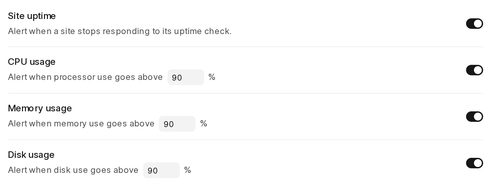
Settings > Notifications on a host after the patch: every alert on, at 90%. - Pull request
- https://github.com/frappe/pilot/pull/781
#386 Custom domain and TLS status from the certificate on disk
Merged- Scope
- On your note, there are no WHOIS, RDAP, DNS or HTTP checks. Pilot never connects to a domain, so a Sleepy VM stays asleep. All state comes from the certificate files and certbot's results.
- Root cause
- A failed issue or renewal was only printed in the task log. The domain list showed a plain lock, so a broken domain looked the same as one waiting for a certificate.
- Change
- bench.certificates keeps one record per certificate in logs/certificates.json: the names asked for, the names the file covers, the expiry, and certbot's last error. Each obtain records its result, and the daily certificate timer reads each file again. Certbot now writes its output to the task log, and a failure keeps certbot's reason (Domain, Type, Detail) instead of a generic footer.
- Domain status
- valid, pending, failed, expiring (under 14 days, so renewal is not working) or expired. The last three mean the domain is broken. A new domain that fails does not mark the names the current file still covers as broken. A renewal failure inside the 30-day window marks every name as failed.
- Alerts
- A certificate that breaks raises one certificate_failed or certificate_expiry alert to the feed, mail and webhooks. Pilot alerts again only after the certificate was valid and then broke again.
- Test server
- Port 80 was blocked for one minute and a new domain was added. Certbot failed, the domain showed 'Certificate failed' with certbot's reason, and one signed certificate_failed webhook arrived. A second failed run did not alert again. With port 80 open, the timer added the domain to the certificate, both domains showed valid, and the alert was reset.
- Tests
- New tests: each state, a failed new domain does not break covered names, a new domain waits, a success clears the failure, alert once until valid again, issue failure recorded and alerted, the domain row status, certbot's reason kept, and the UI badge and tooltip. Tests never shell out to sudo for certificate files.
- Branch
- feat/tls-status, based on feat/default-alerts
- Review UI
- The final screenshot uses simulated API responses in the real dashboard to show every state. It is not live certificate evidence. An expiring certificate currently has a red open lock, even while HTTPS still works.
- Screens
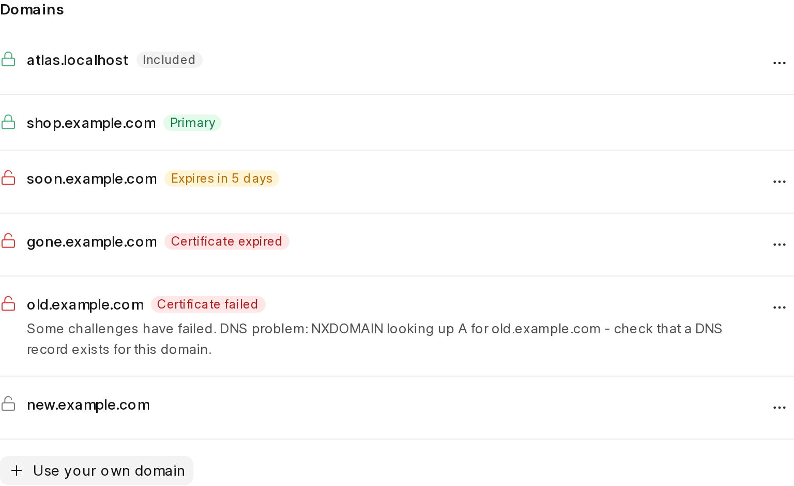
Real dashboard with simulated valid, expiring, expired, failed and pending certificates. - Pull request
- https://github.com/frappe/pilot/pull/782
Final checks after review
These checks ran at stack tip eda9f204, based on develop at 876059e9. Earlier live checks below describe the first test server deployment. The server was not deployed again after the local UI review.
| Item | Result | Evidence |
|---|---|---|
| Python suite | note | 4169 passed, one skipped, one failed. The failing process-timeout test matched an unrelated agent shell. The earlier deselection used an old path, so this test still ran. |
| Process timeout | ok | All 12 command-runner tests passed in a fresh PID namespace. This removes the unrelated shell from the test's global pgrep search. |
| Frontend | ok | All 91 unit tests passed. Type generation and vue-tsc --noEmit passed. |
| Static checks | ok | Ruff, git diff --check and a scan for test credentials and private test infrastructure passed. |
| GitHub CI | note | Checks were queued when the branches were published. All eight pull requests have since merged. Local test results are recorded above. |
PRs merged on 3 November
Each diff was read. The full test suite on develop passed (4053 tests). Items with a live check ran on a fresh Ubuntu 26.04 test server that was installed from develop.
| Item | Result | Evidence |
|---|---|---|
| #769 build swap helper on a normal install | ok | pilot-build-swap is in /usr/local/bin and its sudoers file exists after a fresh install. |
| #765 opt-in daily Pilot updates | ok | auto-update on adds the 03:37 cron line; off removes it; status reports each state. |
| #764 refuse a migration the disk cannot back up | ok | Merged into develop with #763 under it. Unit and API tests pass. |
| #763 refuse a backup the disk cannot hold | ok | Unit tests pass. A real backup with files, started from the Admin API, passed the space check and succeeded. |
| #762 run git with the stored credential | ok | pilot -b main git frappe log -1 works; an unknown app exits 1 with a clear message. |
| #761 admin domain out of search engines | ok | Admin /robots.txt disallows everything and sends X-Robots-Tag: noindex, nofollow. The site domain has no such header. |
| #760 wait for the certbot lock | ok | Unit tests pass. A real certificate was issued during setup production --tls. |
| #759 2FA QR quiet zone | ok | Diff checked: fixed white quiet zone inside the SVG. |
| #757 cloud settings install progress | ok | Diff checked. The site task API adds steps and progress. Needs Central for a live check. |
| #739 install a chosen release | ok | The release API URL for an older tag resolves to its pilot.tar.gz. A missing --version value exits non-zero, the same as --user. |
| #738 say why setup letsencrypt did nothing | ok | The message names flags that exist on setup production. |
| #737 more AWS regions | ok | The frontend has no second region list; the backend list is the only one. |
| #735 Chromium PDF libraries | ok | On Ubuntu 26.04, Frappe downloaded headless Chromium and returned a valid PDF from get_chrome_pdf. |
Settings > Database check
All actions were run through the UI on the test server.
| Item | Result | Evidence |
|---|---|---|
| Cards: memory, buffer pool, max connections | ok | Values match the host (7.8 GB RAM, 50 % share, 1.5 GB buffer pool). |
| Max connections edit to 60 | ok | Ran as a task and succeeded. MariaDB then reported @@max_connections = 60. |
| Memory split dialog, binary logs dialog | ok | Both open with the current values. |
| Variable list and editor | ok | Tabs, search, Recommended and Allowed ranges show correctly. |
| Buffer pool input clipped, header cut off, 2^64 shown as TB | fixed | See the first card on this page. |
| Focus ring on 'Bench' when the page opens from its URL | note | The dialog focuses its first button. It shows only without a click. Not changed. |
- Screens
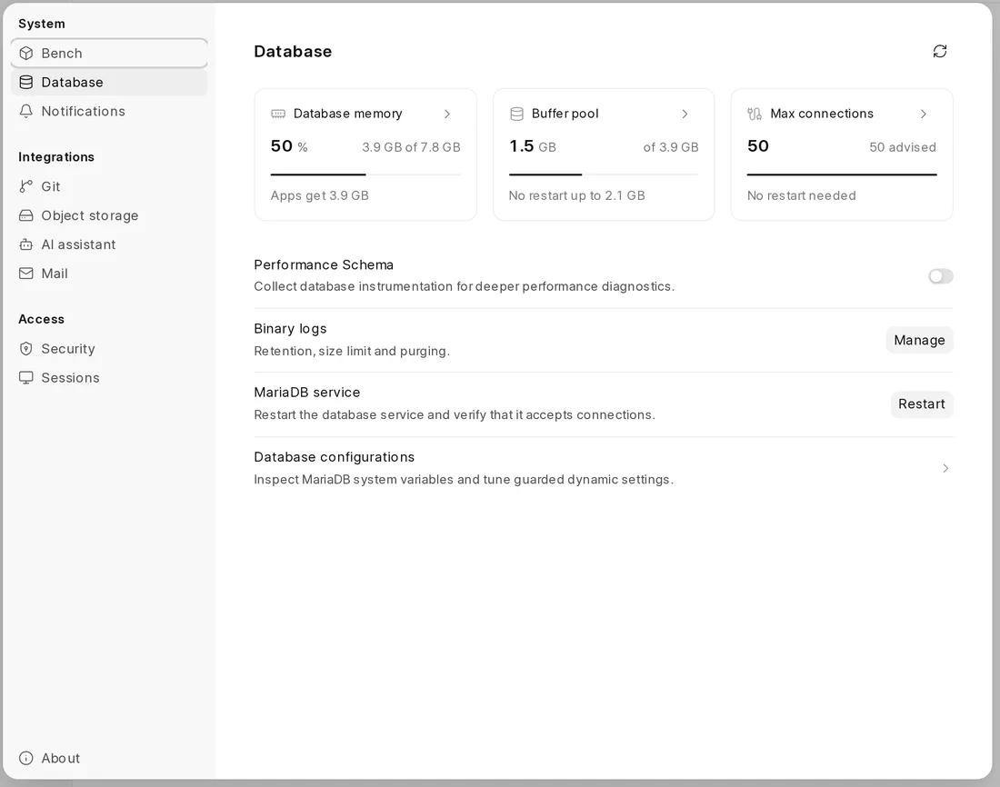
Settings > Database on the test server. 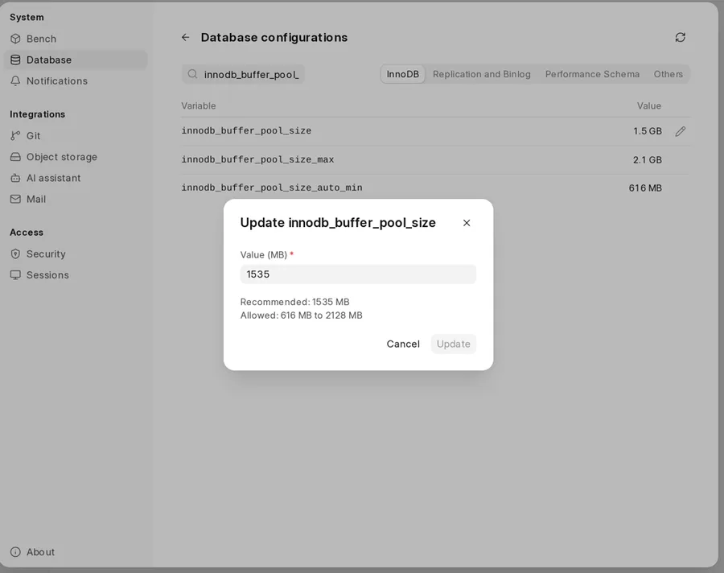
Variable editor for innodb_buffer_pool_size.
Enable automatic Pilot updates
Run these commands on the installed host as the Pilot user.
| Item | Result | Evidence |
|---|---|---|
| Enable | note | pilot admin auto-update on |
| Check | note | pilot admin auto-update status |
| Disable | note | pilot admin auto-update off |
| Schedule | note | The cron job runs each day at 03:37 in the host timezone. It updates Pilot and restarts Admin for each bench. |
| Source installs | note | A source checkout with version dev is skipped. |
Log
- Merged All eight pull requests, #775 through #782, merged into develop. The last merge completed at 12:25 UTC on 4 November.
- Validation The final Python run had 4169 passed, one skipped and one process-matcher failure caused by an unrelated agent shell. All 12 command-runner tests then passed in an isolated process namespace. Lint, type checking, all 91 frontend tests and the secret scan passed.
- Published All eight branches were pushed. Pull requests #775 through #782 are open and linked to the work thread.
- Base The stack was rebased onto develop at 876059e9, which includes the domain setup changes from #771.
- Review Eight branches remain. Reviewed UI changes cover config editing, database sizing, failed updates, S3 backups, webhooks and TLS state.
- Scope Vector was removed from the plan. The separate Update code & retry feature was dropped during review.